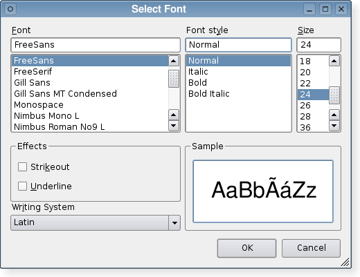

| Home · All Classes · Modules · QSS HELP · QSS 案例 · VER007 HOME |
该QFontDialog类提供了一个对话框控件用于选择字体。More...
继承QDialog。
该QFontDialog类提供了一个对话框控件用于选择字体。
通过静态之一创建一个字体对话框getFont（）函数。
示例：
bool ok; QFont font = QFontDialog.getFont( &ok, QFont("Helvetica [Cronyx]", 10), this); if (ok) { // the user clicked OK and font is set to the font the user selected } else { // the user canceled the dialog; font is set to the initial // value, in this case Helvetica [Cronyx], 10 }
也可以用该对话框直接设置控件的字体：
myWidget.setFont(QFontDialog.getFont(0, myWidget.font()));
如果用户单击OK（确定） ，他们选择的字体将用于进myWidget ，如果他们单击取消原来的字体。

此枚举指定影响的字体对话框的外观和感觉的各种选项。
| Constant | Value | Description |
|---|---|---|
| QFontDialog.NoButtons | 0x00000001 | 不显示OK和Cancel按钮。 （有用的“现场对话” 。 ） |
| QFontDialog.DontUseNativeDialog | 0x00000002 | 使用Qt的Mac上的标准字体对话框，而不是苹果的本地字体面板。 （目前，本土对话框是从未使用过，但是这是有可能在未来的Qt版本中更改。 ） |
这个枚举被引入或修改的Qt 4.5 。
该FontDialogOptions类型是一个typedef为QFlags\u003cFontDialogOption\u003e 。它存储FontDialogOption值的或组合。
See also options，setOption（）和testOption（ ） 。
该parent的说法，如果不是没有，原因self通过Qt的，而不是PyQt的拥有。
构造一个标准的字体对话框。
使用setCurrentFont（）来设置初始字体属性。
该parent参数被传递给QDialog构造函数。
此功能被引入Qt的4.5 。
See also getFont（ ） 。
该parent的说法，如果不是没有，原因self通过Qt的，而不是PyQt的拥有。
构造一个标准字体对话框，给定parent并指定initial字体。
此功能被引入Qt的4.5 。
从重新实现QWidget.changeEvent（ ） 。
从重新实现QDialog.done（ ） 。
关闭对话框，并将其结果代码result。如果显示此对话框exec_（ ） ， （）完成将导致本地事件循环来完成，并exec_（ ）返回result。
See also QDialog.done（ ） 。
执行一个模式字体对话框并返回一个字体。
如果用户点击OK，则返回所选字体。如果用户点击Cancel时，initial字体返回。
该对话框与给定的构造parent并在指定的选项options。title显示为对话框的窗口标题和initial是最初选定的字体。如果ok参数不为空，它指的是该值设置为True，如果用户点击OK，并设置为False，如果用户点击Cancel。
示例：
bool ok; QFont font = QFontDialog.getFont(&ok, QFont("Times", 12), this); if (ok) { // font is set to the font the user selected } else { // the user canceled the dialog; font is set to the initial // value, in this case Times, 12. }
也可以用该对话框直接设置控件的字体：
myWidget.setFont(QFontDialog.getFont(0, myWidget.font()));
在这个例子中，如果用户单击OK（确定） ，他们选择的字体将被使用，如果他们单击取消原来的字体。
Warning:不要删除parent在该对话框的执行。如果你想这样做，你应该用一个自己创建的对话框QFontDialog构造函数。
调用的getFont （ok，initial，parent）代替。
Warning:不要删除parent在该对话框的执行。如果你想这样做，你应该用一个自己创建的对话框QFontDialog构造函数。
该name参数被忽略。
此功能被引入Qt的4.5 。
调用的getFont （ok，parent）代替。
Warning:不要删除parent在该对话框的执行。如果你想这样做，你应该用一个自己创建的对话框QFontDialog构造函数。
该name参数被忽略。
这是一个重载函数。
此功能被引入Qt的4.5 。
这是一个重载函数。
在打开的对话框并连接其fontSelected（）信号到由指定的槽receiver和member。
该信号会从插槽中断开时，关闭对话框。
此功能被引入Qt的4.5 。
返回用户选择通过单击字体OK或等效按钮。
Note:此字体并不总是一样的举行的字体currentFont因为用户属性终于可以选择一个使用之前选择不同的字体。
设置给定option被启用，如果on是真的，否则，清除给定的option。
See also options和testOption（ ） 。
从重新实现QWidget.setVisible（ ） 。
返回True如果给定的option被启用，否则返回False 。
See also options和setOption（ ） 。
这是该信号的默认超载。
当当前字体改变这个信号被发射。新字体中指定font。
当用户在选择字体的信号被发射。最终，所选择的字体可能不同于当前选择的字体。
此功能被引入Qt的4.5 。
See also currentFont，fontSelected（）和selectedFont（ ） 。
这是该信号的默认超载。
当字体已被选定，这个信号被发射。选择的字体在指定font。
当用户已经选择了最后的字体要使用的信号只发射。当用户改变当前字体的字体对话框它不发射。
此功能被引入Qt的4.5 。
See also selectedFont（ ）currentFontChanged（）和currentFont。
| PyQt 4.10.3 for X11 | Copyright © Riverbank Computing Ltd and Nokia 2012 | Qt 4.8.5 |